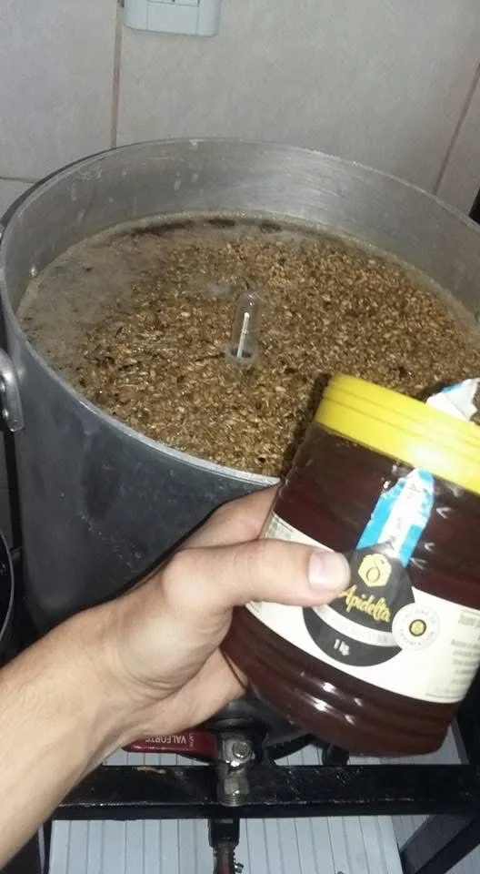
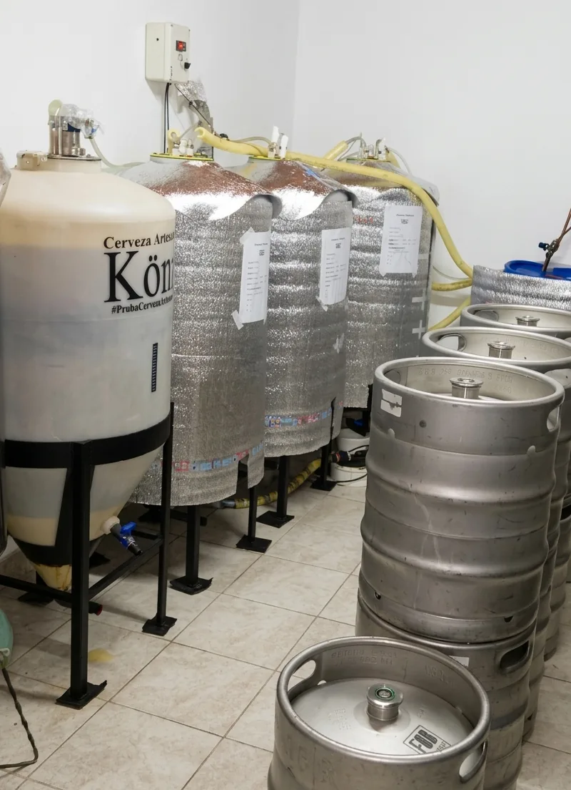
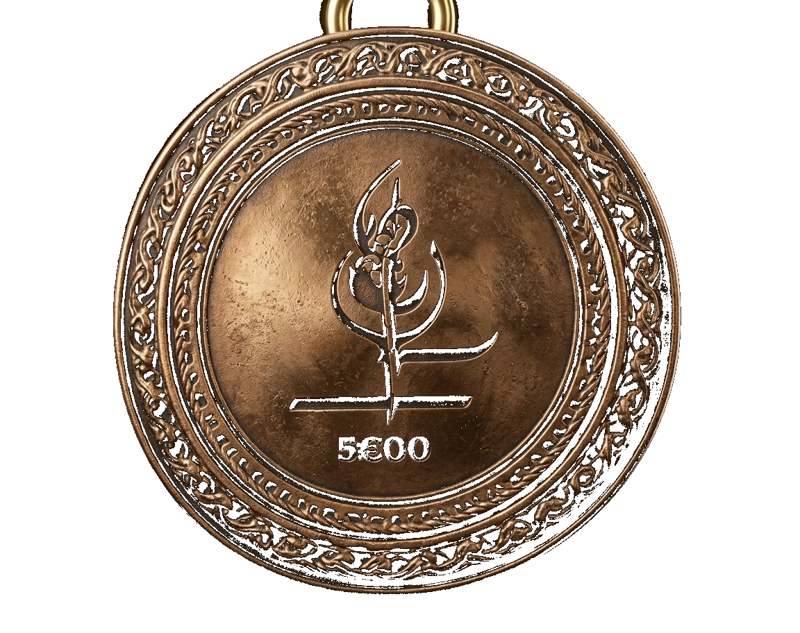
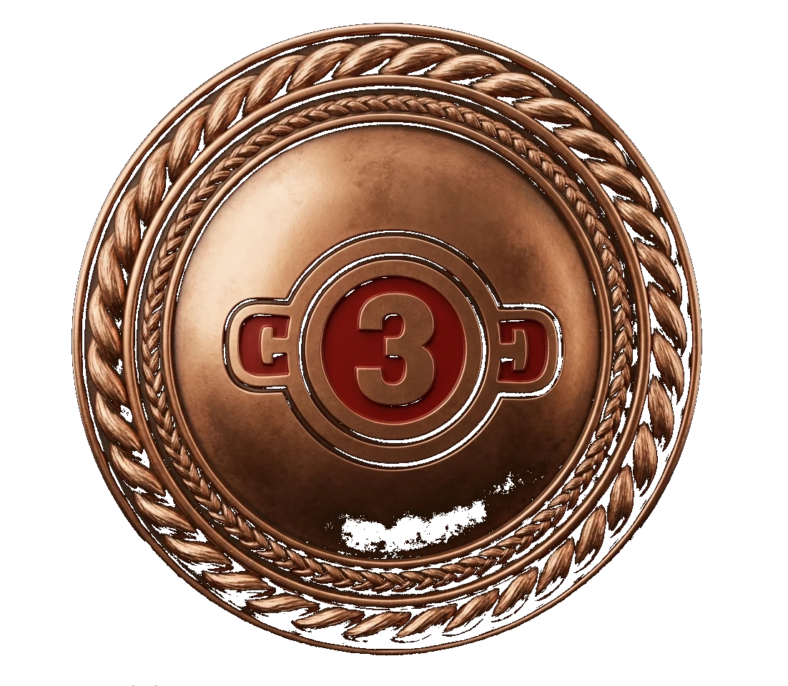
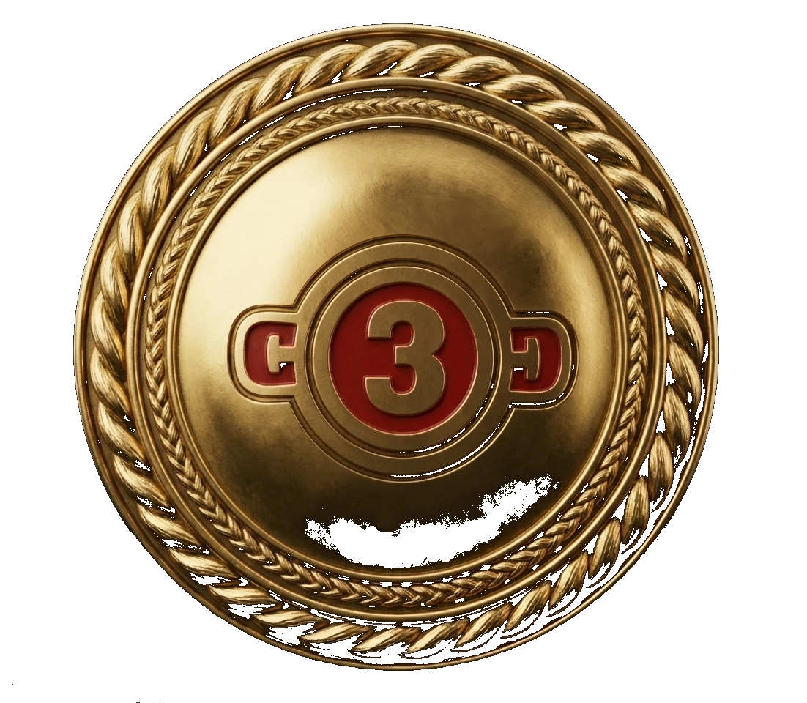

Copa Argentina
Session IPA
Nuestra primera competencia, nuestra primera medalla. La Session IPA entra al podio nacional entre las tres mejores del país en su estilo.
König · Cerveza Artesanal
El consumo de alcohol está prohibido para menores de edad. Ingresá solo si tenés 18 años o más.
Al ingresar confirmás que tenés 18 años o más y aceptás nuestros Términos y Condiciones. Ley 24.788 — Lucha contra el Alcoholismo.
En 2016, en Ciudad Larroque, no había una cerveza artesanal de verdad. Había opciones, sí. Pero ninguna que se sintiera local, ni que estuviera hecha con el criterio que queríamos. Esa fue la pregunta que nos puso en marcha: ¿por qué no la hacíamos nosotros?
Antes de empezar habíamos mirado, viajado, probado y aprendido. Habíamos recorrido las ferias más grandes del país y nos habíamos formado en el oficio. Cuando volvimos a Entre Ríos, la idea ya estaba clara. Lo que faltaba era animarse. Y nos animamos.

Primera cocción · 2016
Primeros equipos · elaboraciónArrancamos con una olla de 30 litros y el objetivo de aprender el oficio de verdad. Dos meses haciendo pruebas. Ajustando temperaturas, corrigiendo tiempos, tirando lotes que no nos convencían. Cuando la cerveza empezó a salir como queríamos, supimos que esto ya no era un experimento.
A los tres meses dimos el primer salto: un equipo de 200 litros. Con ese equipo íbamos a elaborar durante los seis años siguientes. Sin apuro. Probando estilos, ajustando recetas, escuchando a la gente. Construyendo la identidad antes de pensar siquiera en escalar.
Arrancamos en Ciudad Larroque con un equipo de 30 litros. Dos meses aprendiendo el oficio, hasta que la cerveza empezó a salir como queríamos.
El primer salto. Con este equipo elaboramos durante seis años, sumando estilos, ajustando recetas y construyendo la identidad de la marca.

Nuestra primera competencia y nuestra primera medalla. La Session IPA se lleva el bronce en la Copa Argentina y queda entre las tres mejores del país en su estilo.
La Bohemia Pilsen se lleva el oro. Segundo año consecutivo en competencia, segundo podio. La confirmación de que el camino era el correcto.
El salto más grande hasta ahora. Nos mudamos a una fábrica propia con un equipo de 600 litros. La capacidad pasa de 2.000 a 6.000 litros mensuales. Más espacio, mismo criterio.


Volvemos a competir y subimos al podio dos veces. La Blonde se lleva el oro y la Neipa el bronce en la Copa 3 Ciudades 2026.
No hacemos cerveza para ganar premios. Pero cuando llegan, los recibimos como lo que son: la confirmación de que estamos haciendo bien las cosas.
Nuestra primera competencia, nuestra primera medalla. La Session IPA entra al podio nacional entre las tres mejores del país en su estilo.
La Bohemia Pilsen se lleva el oro. Segundo año consecutivo en competencia, segundo reconocimiento internacional.
La Blonde se lleva el oro y la NEIPA el bronce. Volvemos al podio desde la fábrica nueva.
"La cerveza artesanal no es
un producto. Es una forma de hacer las cosas."
Oficio. Cada lote lo controlamos nosotros. Elegimos los ingredientes uno por uno, ajustamos cada receta hasta que está como queremos y no entregamos nada que no nos tomaríamos. Esa es la regla, y no la cambiamos por nada.
Tiempo. Crecimos lento a propósito. Seis años con el mismo equipo de 200 litros antes del salto a la fábrica nueva. Porque antes de hacer más queríamos hacerlo bien. Y eso no cambia, ni cuando la producción se multiplica por tres.
Búsqueda. No nos quedamos quietos. Probamos estilos nuevos, viajamos a competir, escuchamos a la gente que nos toma. Cada cerveza que sumamos al portfolio pasa por el mismo filtro: ¿le agrega algo a lo que ya tenemos? Si la respuesta es sí, va.